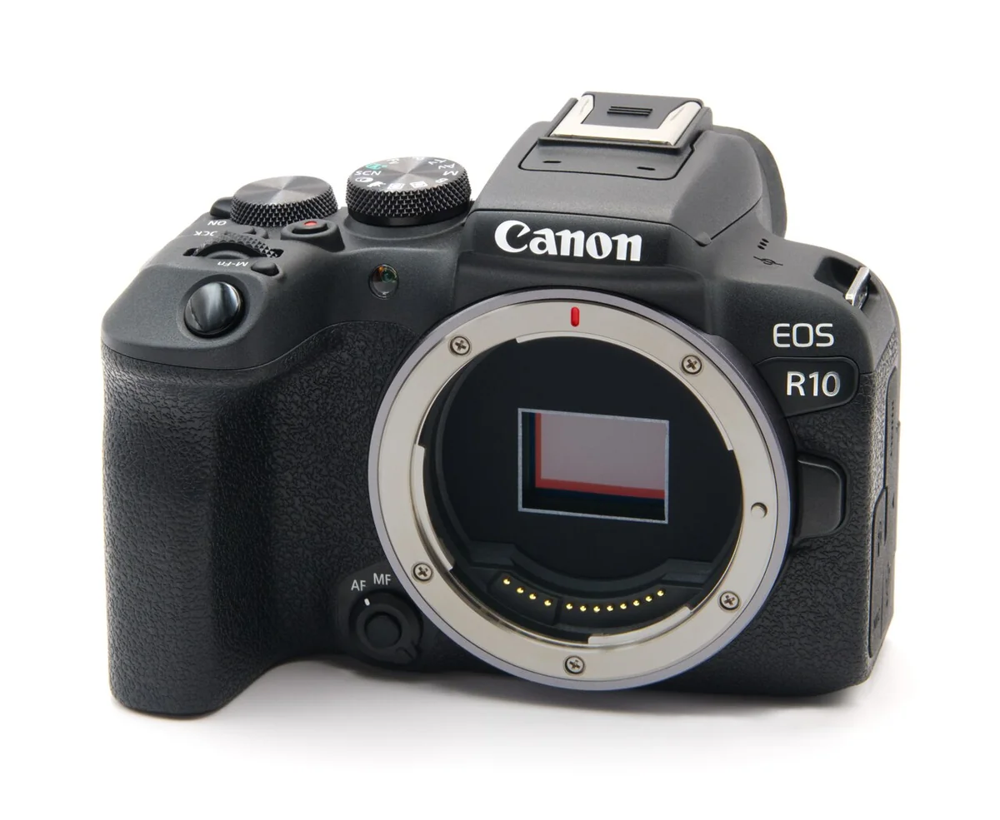
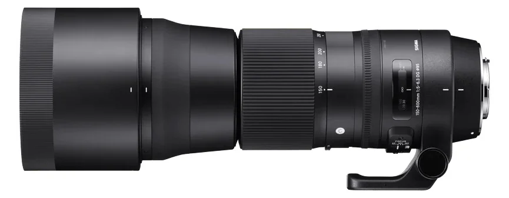

I'm Ben. Welcome to my catalogue!
This site allows me to showcase some of my favourite work in its highest quality.
The media on this site is original and protected. Please don't reproduce it without permission.
Canon EOS R10

Sigma 150–600mm f/5–6.3
DG OS HSM Contemporary

See something you like, or just want to reach out? Shoot me an email—I'd love to hear from you!